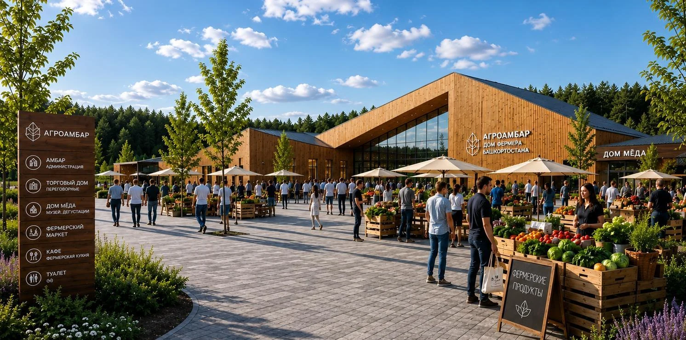

Чишминский районЦентр
Центр
агрокреаномики
Мы создаём центр, где фермеры, ремесленники и молодые предприниматели смогут вместе разрабатывать местные продукты и знакомить с ними покупателей.
Посмотреть замысел центра ↗
Мы создаём центр, где фермеры, ремесленники и молодые предприниматели смогут вместе разрабатывать местные продукты и знакомить с ними покупателей.
Посмотреть замысел центра ↗